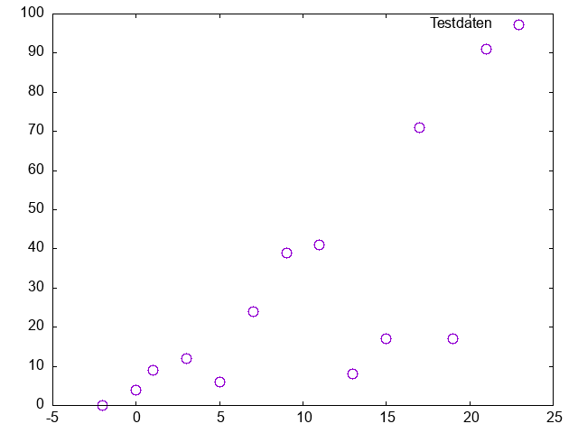

Gnuplot Basics#
Introduction#
Script-based programming languages like python or R are recommended for analysing large volumes of data. Compared to ‘proper’ programming languages, these have the advantage that their command sets are relatively easy to implement. Although such scripts are initially more difficult to understand than programmes such as EXCEL, they enable more efficient work when dealing with complex applications, numerous repetitions or simply very large volumes of data.
Here, Gnuplot is used. Compared to Python or R, Gnuplot is very limited and focuses primarily on the graphical representation of datasets. However, it has the same scripting command character, is easy to install on all platforms, and offers a manageable set of commands.
First small Gnuplot script#
Gnuplot can display the output directly on the screen or save it directly to a file in a variety of graphic formats. Therefore, the output need to be specified in the first line. Here, the “Windows terminal” (standard on Windows computers) is set. The second and third line begins with the comment symbol #, so these lines are ignored. If the #-symbol is erased, the output will be written in the file “test-plot.png”.
set terminal windows mono
#set terminal png
#set output "test-plot.png"
Data is plottet by the following command where
using 1:2 means: the first column in the file are x-values, the 2nd column are the y-values.
every 2 means: plot only every second data point
title (or short t) defines a title
pt and ps are modifiing the shape and size of the points
plot 'testdaten.dat' using 1:2 every 2 title'Testdaten' pt 6 ps 2
Copy these two code lines a new text file and saved as a .plt file.
To have some plotting data copy the following “random” x-y-values in a new text file and save it as testdaten.dat.
#testdata
# x-values y1-values y2-values
-2,10 0,39 10,33
-0,25 4,40 8,18
1,32 9,75 6,27
3,72 12,87 7,34
5,87 6,38 2,64
7,95 24,54 -0,478
9,71 39,36 -3,48
11,84 41,36 6,02
13,47 8,16 -8,31
15,24 17,78 -1,83
17,63 71,72 4,76
19,31 17,12 -2,76
21,86 91,64 -33,38
If you now run the gnuplot-script, the plot should look like this:

To use the third column as y-values and every data point try
plot 'testdaten.dat' using 1:3 every 1 title'Testdaten' pt 6 ps 2
… or both data sets (with different pt and ps)
plot 'testdaten.dat' using 1:2 every 1 title'y1-Testdaten' pt 6 ps 2,/
'testdaten.dat' using 1:3 every 1 title'y2-Testdaten' pt 2 ps 4,
… and with axis label and a defined range (to be inserted before the plot-command):
# axis label
set xlabel 'x-values'
set ylabel 'y-values'
#
set xrange[-5:25]
set yrange[-50:100]
set key bottom center
NOTE You get greek letters (here sigma) or symbols via set label ‘{/Symbol s}’